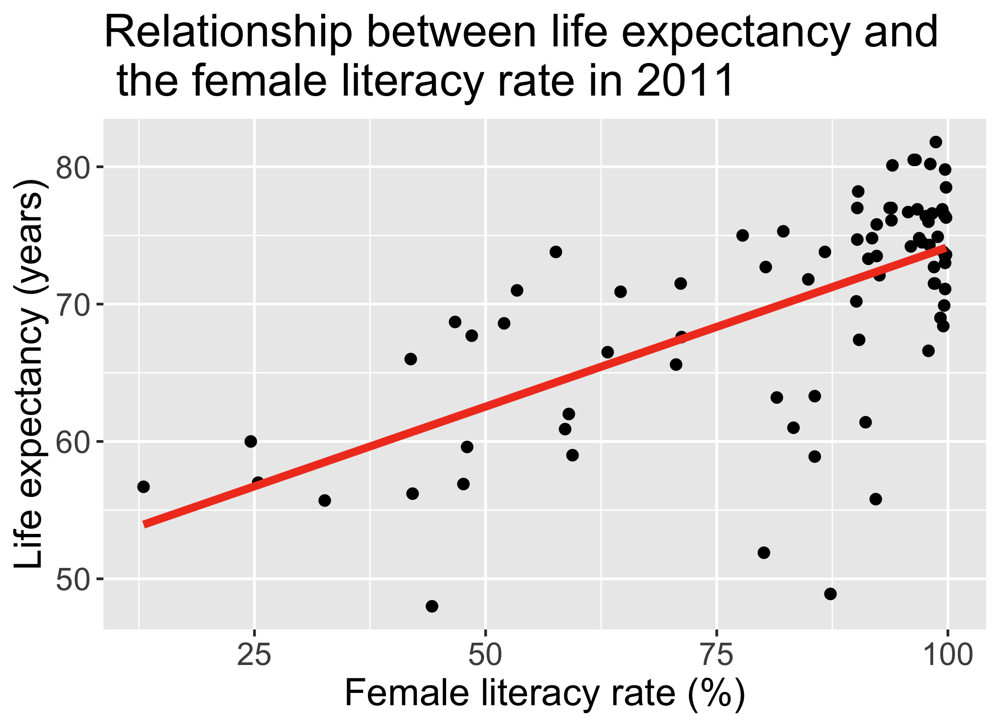
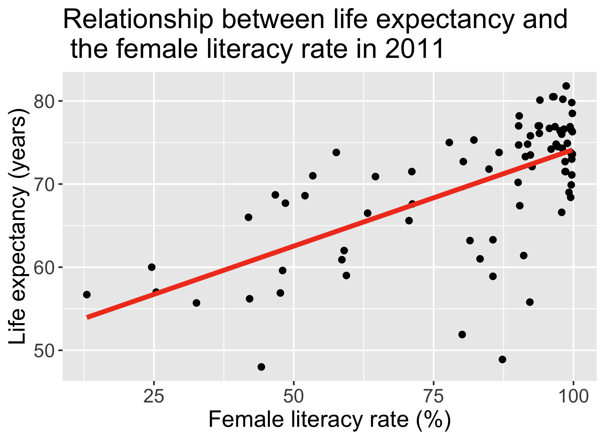
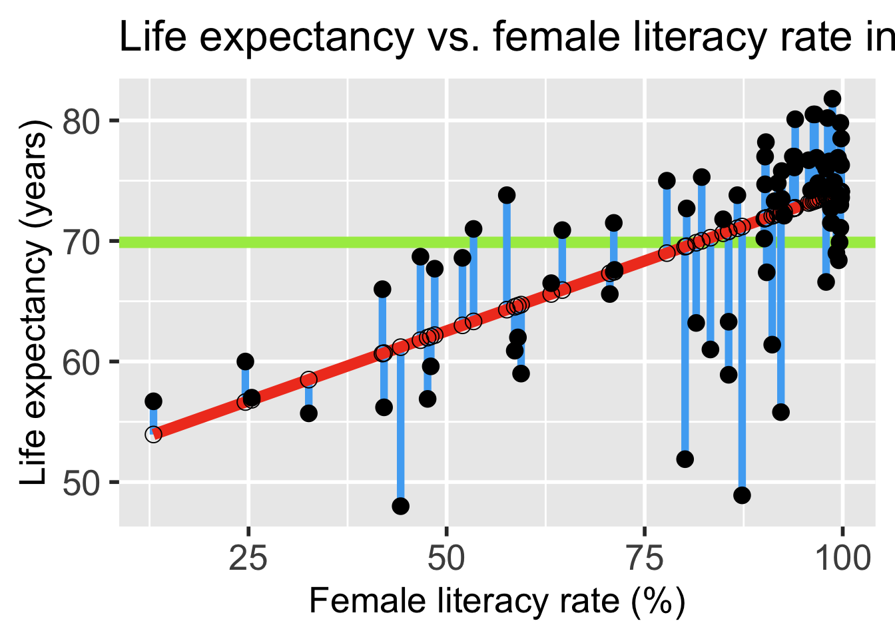
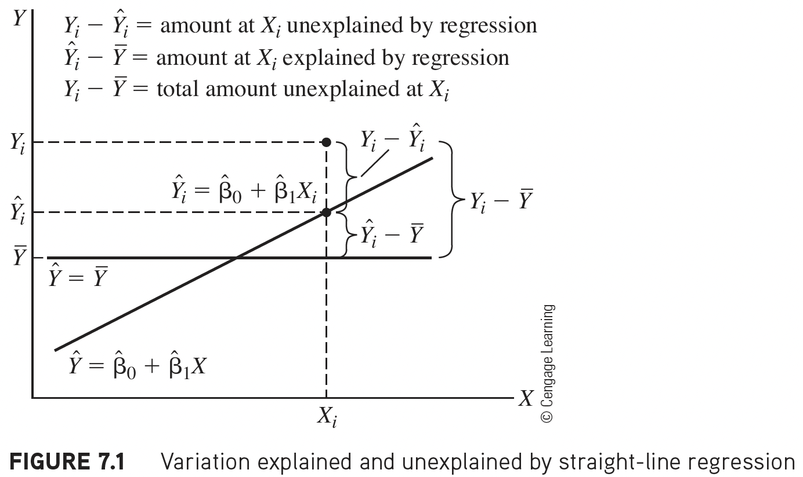
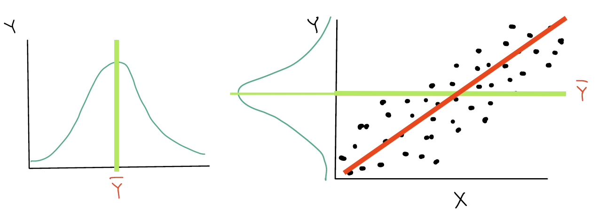
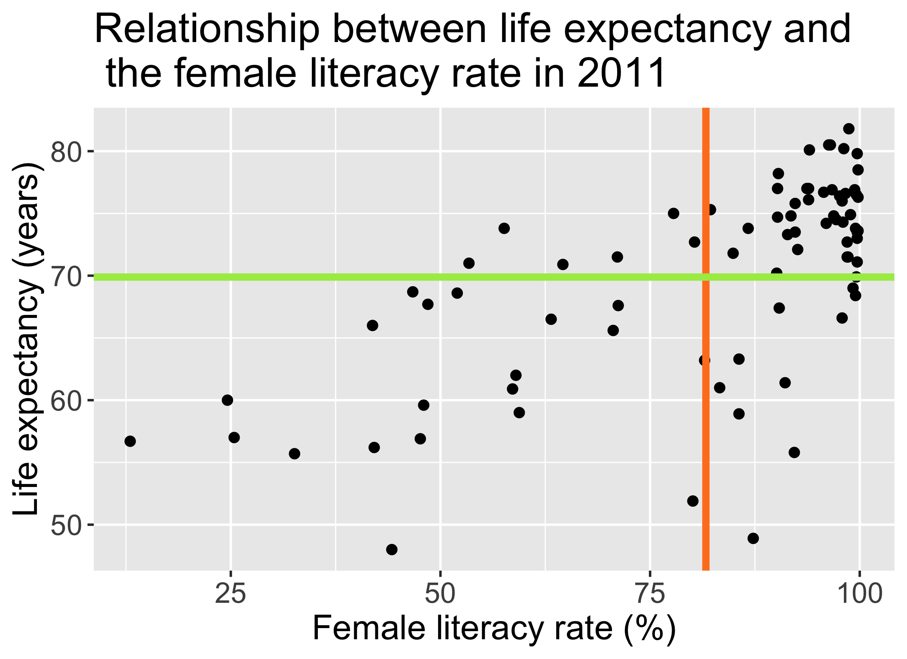
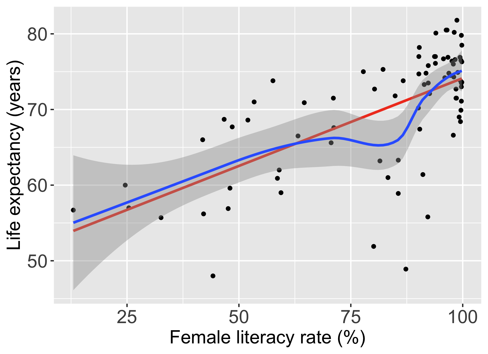

Warning: Using `size` aesthetic for lines was deprecated in ggplot2 3.4.0.
ℹ Please use `linewidth` instead.`geom_smooth()` using formula = 'y ~ x'
Identify different sources of variation in an Analysis of Variance (ANOVA) table
Using the F-test, determine if there is enough evidence that population slope \(\beta_1\) is not 0
Calculate and interpret the coefficient of determination
Describe the model assumptions made in linear regression using ordinary least squares
Lesson 3: SLR 1
Lesson 4: SLR 2
Warning: Using `size` aesthetic for lines was deprecated in ggplot2 3.4.0.
ℹ Please use `linewidth` instead.`geom_smooth()` using formula = 'y ~ x'


Model Selection
Building a model
Selecting variables
Prediction vs interpretation
Comparing potential models
Model Fitting
Find best fit line
Using OLS in this class
Parameter estimation
Categorical covariates
Interactions
Model Evaluation
Model Use (Inference)
Using the F-test, determine if there is enough evidence that population slope \(\beta_1\) is not 0
Calculate and interpret the coefficient of determination
Describe the model assumptions made in linear regression using ordinary least squares
The F statistic in linear regression is essentially a proportion of the variance explained by the model vs. the variance not explained by the model
Start with visual of explained vs. unexplained variation
Figure out the mathematical representations of this variation
Look at the ANOVA table to establish key values measuring our variance from our model
Build the F-test
`geom_smooth()` using formula = 'y ~ x'
\[ \begin{aligned} Y_i - \overline{Y} & = (Y_i - \widehat{Y}_i) + (\widehat{Y}_i- \overline{Y})\\ \text{Total unexplained variation} & = \text{Residual variation after regression} + \text{Variation explained by regression} \end{aligned}\]
\[Y_i - \overline{Y} = (Y_i - \widehat{Y}_i) + (\widehat{Y}_i- \overline{Y})\]


\[ \begin{aligned} Y_i - \overline{Y} & = (Y_i - \widehat{Y}_i) + (\widehat{Y}_i- \overline{Y})\\ \text{Total unexplained variation} & = \text{Variation due to regression} + \text{Residual variation after regression} \end{aligned}\]
\[\begin{aligned} \sum_{i=1}^n (Y_i - \overline{Y})^2 & = \sum_{i=1}^n (\widehat{Y}_i- \overline{Y})^2 + \sum_{i=1}^n (Y_i - \widehat{Y}_i)^2 \\ SSY & = SSR + SSE \end{aligned}\] \[\text{Total Sum of Squares} = \text{Sum of Squares due to Regression} + \text{Sum of Squares due to Error (residuals)}\]
ANOVA table:
| Variation Source | df | SS | MS | test statistic | p-value |
|---|---|---|---|---|---|
| Regression | \(1\) | \(SSR\) | \(MSR = \frac{SSR}{1}\) | \(F = \frac{MSR}{MSE}\) | |
| Error | \(n-2\) | \(SSE\) | \(MSE = \frac{SSE}{n-2}\) | ||
| Total | \(n-1\) | \(SSY\) |
\[\begin{aligned} \sum_{i=1}^n (Y_i - \overline{Y})^2 & = \sum_{i=1}^n (\widehat{Y}_i- \overline{Y})^2 + \sum_{i=1}^n (Y_i - \widehat{Y}_i)^2 \\ SSY & = SSR + SSE \end{aligned}\] \[\text{Total Sum of Squares} = \text{Sum of Squares due to Regression} + \text{Sum of Squares due to Error (residuals)}\]
ANOVA table:
| Variation Source | df | SS | MS | test statistic | p-value |
|---|---|---|---|---|---|
| Regression | \(1\) | \(SSR\) | \(MSR = \frac{SSR}{1}\) | \(F = \frac{MSR}{MSE}\) | |
| Error | \(n-2\) | \(SSE\) | \(MSE = \frac{SSE}{n-2}\) | ||
| Total | \(n-1\) | \(SSY\) |
F-statistic: Proportion of variation that is explained by the model to variation not explained by the model
# Fit regression model:
model1 <- lm(LifeExpectancyYrs ~ FemaleLiteracyRate,
data = gapm)
anova(model1)Analysis of Variance Table
Response: LifeExpectancyYrs
Df Sum Sq Mean Sq F value Pr(>F)
FemaleLiteracyRate 1 2052.8 2052.81 54.414 1.501e-10 ***
Residuals 78 2942.6 37.73
---
Signif. codes: 0 '***' 0.001 '**' 0.01 '*' 0.05 '.' 0.1 ' ' 1anova(model1) %>% tidy() %>% gt() %>%
tab_options(table.font.size = 40) %>%
fmt_number(decimals = 3)| term | df | sumsq | meansq | statistic | p.value |
|---|---|---|---|---|---|
| FemaleLiteracyRate | 1.000 | 2,052.812 | 2,052.812 | 54.414 | 0.000 |
| Residuals | 78.000 | 2,942.635 | 37.726 | NA | NA |
Calculate and interpret the coefficient of determination
Describe the model assumptions made in linear regression using ordinary least squares
\[F = \frac{MSR}{MSE}\]
\[E(MSE)=\sigma^2\ \text{and}\ E(MSR) = \sigma^2 + \beta_1^2\sum_{i=1}^n (X_i- \overline{X})^2\]
The square of a \(t\)-distribution with \(df = \nu\) is an \(F\)-distribution with \(df = 1, \nu\)
\[T_{\nu}^2 \sim F_{1,\nu}\]
Note that the F-test does not support one-sided alternative tests, but the t-test does!
We can think about the hypothesis test for the slope…
Null \(H_0\)
\(\beta_1=0\)
Alternative \(H_1\)
\(\beta_1\neq0\)
in a slightly different way…
Null model (\(\beta_1=0\))
Alternative model (\(\beta_1\neq0\))
In multiple linear regression, we can start using this framework to test multiple coefficient parameters at once
Decide whether or not to reject the smaller reduced model in favor of the larger full model
Cannot do this with the t-test when we have multiple coefficients!
Often, we are curious if the coefficient is 0 or not:
\[\begin{align} H_0 &: \beta_1 = 0\\ \text{vs. } H_A&: \beta_1 \neq 0 \end{align}\]Often we use \(\alpha = 0.05\)
The test statistic is \(F\), and follows an F-distribution with numerator \(df=1\) and denominator \(df=n-2\).
The calculated test statistic for \(\widehat\beta_1\) is
\[F = \frac{MSR}{MSE}\]
We are generally calculating: \(P(F_{1, n-2} > F)\)
We (reject/fail to reject) the null hypothesis that the slope is 0 at the \(100\alpha\%\) significiance level. There is (sufficient/insufficient) evidence that there is significant association between (\(Y\)) and (\(X\)) (p-value = \(P(F_{1, n-2} > F)\)).
We are testing if the slope is 0 or not:
\[\begin{align} H_0 &: \beta_1 = 0\\ \text{vs. } H_A&: \beta_1 \neq 0 \end{align}\]Often we use \(\alpha = 0.05\)
The test statistic is \(F\), and follows an F-distribution with numerator \(df=1\) and denominator \(df=n-2 = 80-2\).
nobs(model1)[1] 80anova(model1) %>% tidy() %>% gt() %>%
tab_options(table.font.size = 40)| term | df | sumsq | meansq | statistic | p.value |
|---|---|---|---|---|---|
| FemaleLiteracyRate | 1 | 2052.812 | 2052.81234 | 54.4136 | 1.501286e-10 |
| Residuals | 78 | 2942.635 | 37.72609 | NA | NA |
\[F = \frac{MSR}{MSE} = \frac{2052.81}{37.73}=54.414\]
I tend to skip this step because I can do it all with step 6
As per Step 4, test statistic \(F\) can be modeled by a \(F\)-distribution with \(df1 = 1\) and \(df2 = n-2\).
Option 1: Use pf() and our calculated test statistic
# p-value is ALWAYS the right tail for F-test
pf(54.414, df1 = 1, df2 = 78, lower.tail = FALSE)[1] 1.501104e-10anova(model1) %>% tidy() %>% gt() %>%
tab_options(table.font.size = 40)| term | df | sumsq | meansq | statistic | p.value |
|---|---|---|---|---|---|
| FemaleLiteracyRate | 1 | 2052.812 | 2052.81234 | 54.4136 | 1.501286e-10 |
| Residuals | 78 | 2942.635 | 37.72609 | NA | NA |
We reject the null hypothesis that the slope is 0 at the \(5\%\) significance level. There is sufficient evidence that there is significant association between female life expectancy and female literacy rates (p-value < 0.0001).
The p-value of the t-test and F-test are the same!!
tidy(model1) %>% gt() %>%
tab_options(table.font.size = 40)| term | estimate | std.error | statistic | p.value |
|---|---|---|---|---|
| (Intercept) | 50.9278981 | 2.66040695 | 19.142898 | 3.325312e-31 |
| FemaleLiteracyRate | 0.2321951 | 0.03147744 | 7.376557 | 1.501286e-10 |
anova(model1) %>% tidy() %>% gt() %>%
tab_options(table.font.size = 40)| term | df | sumsq | meansq | statistic | p.value |
|---|---|---|---|---|---|
| FemaleLiteracyRate | 1 | 2052.812 | 2052.81234 | 54.4136 | 1.501286e-10 |
| Residuals | 78 | 2942.635 | 37.72609 | NA | NA |
This is true when we use the F-test for a single coefficient!
Identify different sources of variation in an Analysis of Variance (ANOVA) table
Using the F-test, determine if there is enough evidence that population slope \(\beta_1\) is not 0
Correlation coefficient \(r\) can tell us about the strength of a relationship
If \(r = -1\), then there is a perfect negative linear relationship between \(X\) and \(Y\)
If \(r = 1\), then there is a perfect positive linear relationship between \(X\) and \(Y\)
If \(r = 0\), then there is no linear relationship between \(X\) and \(Y\)
Note: All other values of \(r\) tell us that the relationship between \(X\) and \(Y\) is not perfect. The closer \(r\) is to 0, the weaker the linear relationship.

The (Pearson) correlation coefficient \(r\) of variables \(X\) and \(Y\) can be computed using the formula:
\[\begin{aligned} r & = \frac{\sum_{i=1}^n (X_i - \overline{X})(Y_i - \overline{Y})}{\Big(\sum_{i=1}^n (X_i - \overline{X})^2 \sum_{i=1}^n (Y_i - \overline{Y})^2\Big)^{1/2}} \\ & = \frac{SSXY}{\sqrt{SSX \cdot SSY}} \end{aligned}\]
we have the relationship
\[\widehat{\beta}_1 = r\frac{SSY}{SSX},\ \ \text{or},\ \ r = \widehat{\beta}_1\frac{SSX}{SSY}\]

It can be shown that the square of the correlation coefficient \(r\) is equal to
\[R^2 = \frac{SSR}{SSY} = \frac{SSY - SSE}{SSY}\]
(r = cor(x = gapm$LifeExpectancyYrs,
y = gapm$FemaleLiteracyRate,
use = "complete.obs"))[1] 0.6410434r^2[1] 0.4109366(sum_m1 = summary(model1)) # for R^2 value
Call:
lm(formula = LifeExpectancyYrs ~ FemaleLiteracyRate, data = gapm)
Residuals:
Min 1Q Median 3Q Max
-22.299 -2.670 1.145 4.114 9.498
Coefficients:
Estimate Std. Error t value Pr(>|t|)
(Intercept) 50.92790 2.66041 19.143 < 2e-16 ***
FemaleLiteracyRate 0.23220 0.03148 7.377 1.5e-10 ***
---
Signif. codes: 0 '***' 0.001 '**' 0.01 '*' 0.05 '.' 0.1 ' ' 1
Residual standard error: 6.142 on 78 degrees of freedom
Multiple R-squared: 0.4109, Adjusted R-squared: 0.4034
F-statistic: 54.41 on 1 and 78 DF, p-value: 1.501e-10sum_m1$r.squared[1] 0.4109366
Interpretation
41.1% of the variation in countries’ life expectancy is explained by the linear model with female literacy rate as the independent variable.
\(R^2\) is not a measure of the magnitude of the slope of the regression line
\(R^2\) is not a measure of the appropriateness of the straight-line model

Identify different sources of variation in an Analysis of Variance (ANOVA) table
Using the F-test, determine if there is enough evidence that population slope \(\beta_1\) is not 0
Calculate and interpret the coefficient of determination
These are the model assumptions made in ordinary least squares:
[L] Linearity of relationship between variables
[I] Independence of the \(Y\) values
[N] Normality of the \(Y\)’s given \(X\) (residuals)
[E] Equality of variance of the residuals (homoscedasticity)
\[\mu_{y|x} = \beta_0 + \beta_1 \cdot X\]
Warning in geom_point(size = 3, se = FALSE): Ignoring unknown parameters: `se``geom_smooth()` using formula = 'y ~ x'
`geom_smooth()` using method = 'loess' and formula = 'y ~ x'
The \(Y\)-values are statistically independent of one another
Examples of when they are not independent, include
repeated measures (such as baseline, 3 months, 6 months)
data from clusters, such as different hospitals or families
This condition is checked by reviewing the study design and not by inspecting the data

The variance of \(Y\) given \(X\) (\(\sigma_{Y|X}^2\)), is the same for any \(X\)
This is also called homoscedasticity

The distribution of \(Y\) given \(X\) is
This means that the residuals are
[L] Linearity of relationship between variables
Check if there is a linear relationship between the mean response (Y) and the explanatory variable (X)
[I] Independence of the \(Y\) values
Check that the observations are independent
[N] Normality of the \(Y\)’s given \(X\) (residuals)
Check that the responses (at each level X) are normally distributed
[E] Equality of variance of the residuals (homoscedasticity)
Check that the variance (or standard deviation) of the responses is equal for all levels of X